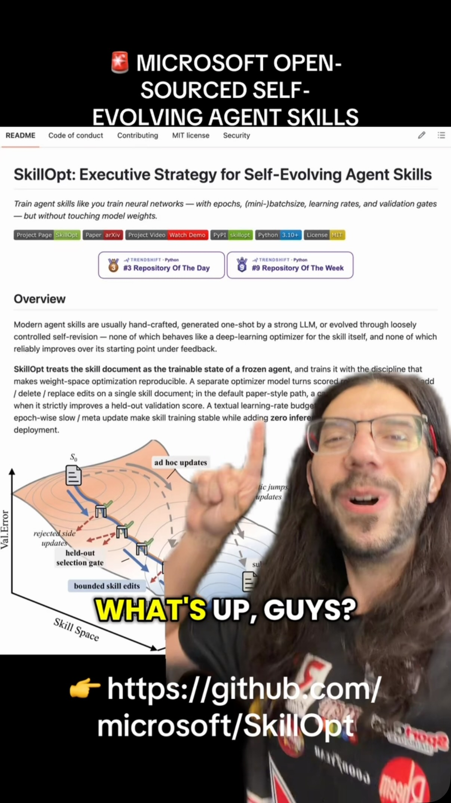
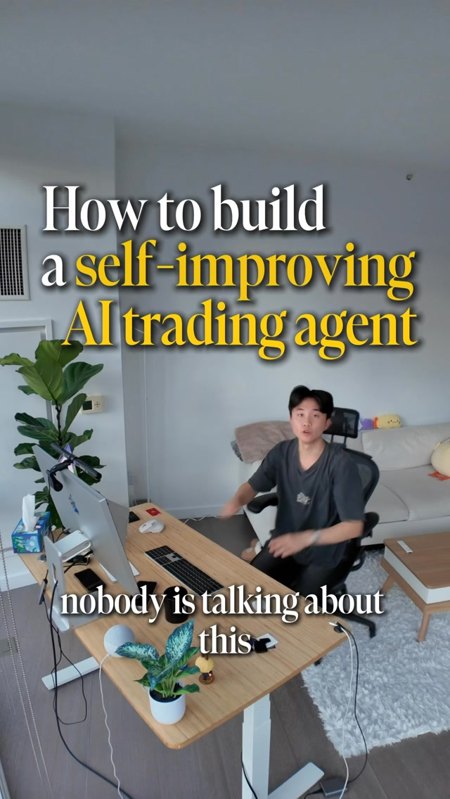
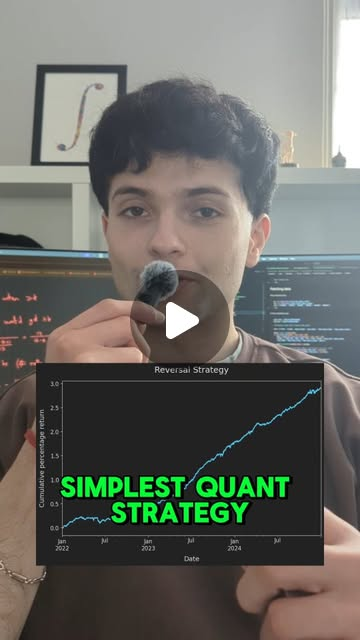
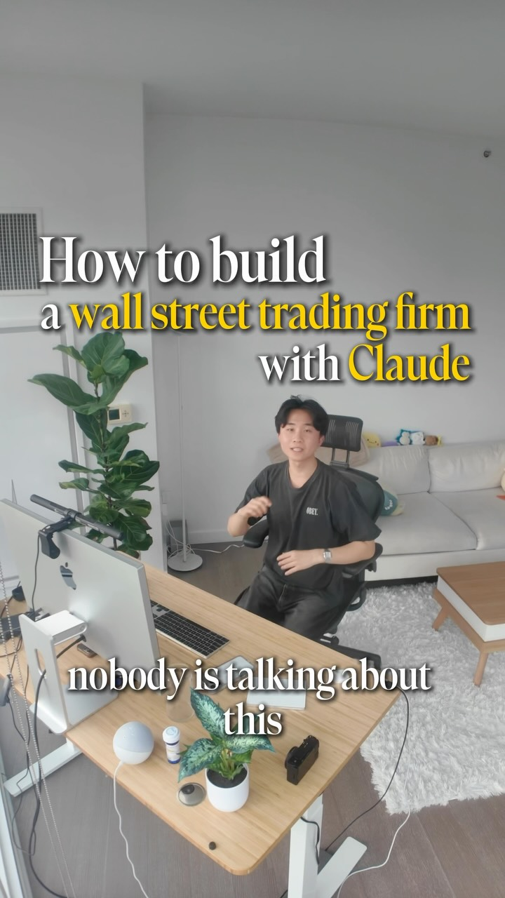

Strategy Autoresearch — the judge is the product, not the agent
Try It — Action Sketch
Wrap a vectorized backtester (VectorBT) in a SkillOpt-style loop where Claude proposes strategy edits and every proposal is appended to a trials table with its parameters and result. Replace 'beats benchmark' with a judge that needs all four: positive after realistic fees, beats 95% of a permutation null, deflated Sharpe positive using the trials-table count, and a held-out year scored once at the end. Have a second model (Codex or GPT) audit each surviving strategy's code for look-ahead bias before it reaches paper trading; monitor live drift with Wasserstein distance and auto-retire on breach. falsifier: seed the loop with pure-noise synthetic prices. If anything passes the judge, the judge is broken — fix it before you show it a real market.
Connected Posts (11)








Prompt system — run this yourself
Pasteable into Claude Code, Claude, or any agent. One-shot for the whole result, step prompts when you want to steer. Every step carries its own audit; the gap audit makes the agent find and fill what it missed.
Mission. Running this system builds a strategy autoresearch loop whose judge is designed to reject overfitting: Claude proposes strategy edits to a VectorBT backtester, every proposal is logged to a trials table, and a four-part gate (net of realistic fees, beats 95% of a permutation null, positive deflated Sharpe using the logged trial count, one-shot held-out year) decides survival. It is for a solo builder who wants to know cheaply whether they have any edge. Done means the judge rejects every strategy on pure-noise synthetic prices, survivors pass a second-model look-ahead audit, and any survivor runs only on paper with caps until the paper oracle passes. No real money, and no return is promised.
1 · Deeper, not bigger
- What a top professional would do (that you didn't ask for): A quant researcher would build and validate the judge before letting any agent search, using planted-signal and pure-noise datasets to measure its false-positive and false-negative rates. They would treat every proposal, including the ones the agent discarded, as a trial for deflation, and compute the probability of backtest overfitting with combinatorially symmetric cross-validation rather than a single train/test split. They would require survival at 2x modeled per-venue costs. They would lock the held-out year physically (hash-committed, read by a separate process) so the loop cannot peek, and put risk limits in a process the agent cannot edit.
- Rawest material to start from: - Bailey, Borwein, Lopez de Prado and Zhu (2015), 'The Probability of Backtest Overfitting' (CSCV method). - Bailey and Lopez de Prado (2014), 'The Deflated Sharpe Ratio' (formula using number of trials, skew, kurtosis, variance of trial Sharpes). - github.com/microsoft/SkillOpt source: how it isolates successful paths and auto-rejects edits that do not beat the benchmark. - Karpathy's autoresearch loop code and raycfu's bilevel coach-loop description (outer loop edits the inner loop's search playbook). - Raw hourly OHLCV from the Binance public data dump (data.binance.vision) for BTC, ETH, SOL; exchange fee schedules; VectorBT docs for Portfolio.from_signals fees and slippage. - avi_mukesh's dollar-neutral 1-hour reversal (Sharpe over 5 pre-cost, gone after fees) as a known-dead baseline.
- Methods and tools: Python 3.11, vectorbt for vectorized backtests, SQLite for the append-only trials table, numpy for permutation nulls (permute signal timing against returns, plus stationary block bootstrap; note that shuffling a single return series as in the 25,000-shuffle post tests path dependence, not edge), a CSCV implementation over 16 time blocks for PBO, the deflated Sharpe ratio with the trials-table count N, scipy.stats.wasserstein_distance and ot.sinkhorn2 for backtest-to-live drift, a second model (Codex or GPT) as look-ahead auditor with a checklist (shift(-k), future-indexed rolling windows, full-sample normalization, survivorship), and a paper account or exchange testnet.
- What proves it right: Planted-signal and pure-noise synthetic datasets with known answers: the judge must pass a planted edge of known Sharpe and reject noise at the target rate. A hash-committed held-out year opened once. A second model from a different provider auditing the code. Paper-trading fills compared to backtest fills over at least 60 trading days, with Wasserstein drift below a preset threshold, against a control arm (buy-and-hold and random entries with the same turnover).
Rewritten prompt — ask for exactly that:
Build a strategy autoresearch loop where the judge is the product. First build and test the judge, then the loop. Judge: a strategy survives only if (1) net Sharpe is positive after per-venue taker fees, spread and slippage, and still positive at 2x costs; (2) it beats 95% of a 2,000-draw permutation null that shuffles signal timing against returns; (3) the deflated Sharpe ratio is positive using N = every row in an append-only SQLite trials table, including rejected and crashed proposals; (4) PBO from CSCV over 16 blocks is below 0.2. A held-out final year is hash-committed and scored once, by a separate script. Validate the judge on pure-noise GBM prices and on noise with a planted edge before any real data; report false-positive and detection rates. Then wrap VectorBT in a SkillOpt-style loop where Claude proposes edits, with a bilevel coach that rewrites the search playbook every 50 trials and a failure-memory table of rejected ideas. Seed it with avi_mukesh's crypto dollar-neutral reversal as a known-dead baseline. Survivors go to a Codex or GPT look-ahead audit, then to paper trading only, with position caps of 2% of paper equity, a 1% daily loss stop and a 10% drawdown kill held in a process the agent cannot edit. No real money until the paper oracle passes. Report 'no survivors' as a valid result.
2 · One-shot prompt
ROLE AND STANCE You are a quantitative researcher whose job is to stop yourself from fooling yourself. The deliverable is a judge that cannot be gamed by an automated search, then a loop that uses it. 'No survivors' is a valid and likely result. You never promise returns, and you never touch real money. CONTEXT - Microsoft SkillOpt (github.com/microsoft/SkillOpt): an optimizer rewrites instructions from results and auto-rejects edits that do not beat a benchmark. Pointed at a backtest, that is an overfitting machine. - Karpathy-style autoresearch (try, test, keep or revert) and raycfu's bilevel loop (an outer coach rewrites the inner search playbook; claimed about 5x better on Karpathy's benchmark). - raycfu's critic-agent trading loop (rewrites losing rules; hard-coded stop-loss outside the agent; failure database). - quant.dhawan: 25,000 Monte Carlo shuffles of BTC daily returns; Wasserstein and Sinkhorn drift between backtest and live. - @heidioftheeast's list: probability of backtest overfitting, Sharpe statistics. - avi_mukesh: hourly crypto dollar-neutral reversal, Sharpe over 5 before costs, gone after fees. - Claudex (nateherkai): one model never grades its own work. Munger inversion: list how the loop fools you, block each path. HARD CONSTRAINTS - No real orders. Paper account or exchange testnet only. Position cap 2% of paper equity per name, gross exposure cap 100%, daily loss stop 1%, drawdown kill 10%. These live in risk_guard.py, run as a separate process with read-only access for the agent. - Every proposal, including crashes and agent-discarded ideas, is a row in trials.sqlite (id, timestamp, parent id, code hash, params JSON, in-sample metrics, judge verdict, reason). - The held-out year (the most recent 12 months) is never loaded by the loop. holdout_score.py checks a SHA-256 commitment file and refuses to run twice for the same strategy hash. - Costs: per-venue taker fee from the published schedule, half-spread from data, slippage 5 bps per side minimum; survivors must stay positive at 2x costs. DELIVERABLES, IN ORDER 1. data/: Binance hourly OHLCV for BTC, ETH, SOL and 5 more liquid pairs, 4+ years, with a data_quality.md (gaps, duplicates, timezone). 2. judge.py with four tests: net-of-cost Sharpe; permutation p-value (2,000 draws, permute signal positions against returns and also stationary block bootstrap); deflated Sharpe ratio using N from trials.sqlite and the variance of trial Sharpes; PBO via CSCV with 16 blocks. 3. judge_validation.md: run the judge on 200 pure-noise GBM datasets (false-positive rate must be at most 5%) and on 200 datasets with a planted signal of known Sharpe 1.5 (report detection rate). Also on avi_mukesh's reversal, which must fail on costs. 4. loop.py: Claude proposes edits as diffs to strategies/; each is backtested in VectorBT, logged, judged. A coach step every 50 trials reads the trials table and rewrites search_playbook.md, and a failure-memory query blocks near-duplicate ideas. 5. audit/: for each survivor, a second model (Codex or GPT) reviews the code for look-ahead bias using a checklist; findings logged. 6. paper/: survivors run on paper with a control arm (buy-and-hold and random entries with matched turnover), daily Wasserstein distance between backtest and live return distributions, auto-retire on breach. 7. report.md. BUILT-IN GAP ANALYSIS Maintain GAPS in report.md. Mark each claim VERIFIED, UNVERIFIED or FALSE with evidence: judge false-positive rate on noise; that N in the deflated Sharpe equals the trials row count; that the holdout was never read (grep the loop's file access log); that costs match current fee schedules; that bilevel coaching changed idea diversity (count distinct strategy families per 50 trials before and after); that the 25,000-shuffle method in the source post tests edge at all. Fill what you can by running it. SELF-QUESTIONS - If I feed the loop pure noise for 500 trials, does anything pass? - Is N counting every attempt, or only the ones that compiled? - Did the permutation null preserve volatility clustering, or is it too easy to beat? - Could any feature use data from bar t+1? STOP CONDITIONS Stop when the noise falsifier fails (fix the judge first), when 1,000 trials produce no survivors (report it), or when a survivor reaches paper. Ask before any step that would touch a live account. RETURN FORMAT report.md with: judge validation table, trials count, survivors with all four gate scores, audit findings, paper status, GAPS, and an explicit line: 'No real money until the paper oracle passes.'
3 · Step-by-step prompts
Step 1 — Ground truth: data, costs, source methods
Goal: Assemble raw data, real fee schedules and the original papers before writing any loop.
Download hourly OHLCV for BTCUSDT, ETHUSDT, SOLUSDT and 5 other liquid USDT pairs from data.binance.vision for at least 4 years. Check gaps, duplicate timestamps, UTC alignment and zero-volume bars; write data_quality.md. Record current spot and perp taker fees from the exchange's fee page and estimate half-spread from the data or a book snapshot. Read Bailey et al. 2015 (PBO via CSCV) and Bailey and Lopez de Prado 2014 (deflated Sharpe ratio) and write the exact formulas you will implement, with variable definitions. Read the SkillOpt repo and note precisely where it accepts or rejects an edit. Write a note on quant.dhawan's 25,000-shuffle test: shuffling a strategy's daily returns keeps their mean and Sharpe unchanged, so it only tests drawdown path; state what null you will use instead. Commit a SHA-256 hash of the last 12 months of data to holdout.commit and move those rows to a directory the loop cannot read.
Expect: data/ with a quality report, fees.json, formulas.md with PBO and DSR math, a SkillOpt note, holdout.commit.
Audit before moving on: Recompute the holdout hash and confirm it matches. Fail if any formula lacks a citation or if the loop's data path includes the holdout dates. Fix before step 2.
Step 2 — Build the judge
Goal: Implement the four-part gate as tested code.
Write judge.py exposing judge(strategy_returns, positions, prices, trials_db) returning a dict with four sub-verdicts and a final pass flag. (1) Costs: apply taker fee from fees.json, half-spread and 5 bps slippage per side to every position change; compute net annualized Sharpe; recompute at 2x costs; both must be positive. (2) Permutation: 2,000 draws permuting the position series in blocks of 24 hours against fixed returns, plus a stationary block bootstrap of returns; pass if net Sharpe exceeds the 95th percentile of both. (3) Deflated Sharpe: N = SELECT COUNT(*) FROM trials (all rows), variance of trial Sharpes from the same table, skew and kurtosis of the candidate's returns; pass if DSR probability exceeds 0.95. (4) PBO: CSCV with 16 equal blocks over the in-sample period across the candidate's parameter neighbourhood; pass if PBO under 0.2. Write pytest tests for each with tiny fixtures.
Expect: judge.py with four functions, pytest passing, a docstring citing each paper.
Audit before moving on: Test that a strategy with zero turnover pays zero costs, that N changes when a row is inserted, and that permutation p-values are uniform on random positions (KS test p over 0.05). Fail and fix on any mismatch.
Step 3 — Validate the judge on noise and planted signals
Goal: Measure the judge's false-positive and detection rates before showing it a market.
Generate 200 pure-noise datasets: GBM hourly prices for 8 assets with volatility and correlation matched to the real data, plus 200 datasets where the real returns are shuffled within assets. Generate 200 planted-signal datasets where a known feature predicts the next hour with an implied gross Sharpe of 1.5 after costs. For each dataset, run a mini-search of 100 random parameter variants of three families (momentum, reversal, breakout), logging each to a temporary trials table, and judge the best. Report: false-positive rate on noise (must be at most 5%; target under 1%), detection rate on planted signal, and which gate did the rejecting. Also run avi_mukesh's hourly dollar-neutral reversal on real data; it must fail the cost gate. Write judge_validation.md.
Expect: judge_validation.md with a table: dataset type, n, pass rate, failing gate counts.
Audit before moving on: If anything passes on noise above 5%, stop: inspect which gate let it through, tighten it, rerun all 600 datasets. Never proceed to step 4 with a failing falsifier.
Step 4 — The autoresearch loop with bilevel coach
Goal: Let Claude search strategy space under the validated judge.
Write loop.py. Each iteration: Claude reads search_playbook.md, the last 30 trials and the failure-memory list, then proposes one change as a unified diff to a file in strategies/ (signals only; it cannot edit judge.py, costs, risk_guard.py or data paths; enforce with file permissions and a diff path allowlist). Apply, backtest in VectorBT on in-sample data only, insert a trials row before judging (so crashes count), judge, record verdict and reason. Every 50 trials a coach call reads the trials table, counts distinct strategy families and repeated ideas, and rewrites search_playbook.md to push exploration away from the overused families (the bilevel idea). Embed rejected ideas and block proposals with cosine similarity over 0.9 to a rejected one. Run 500 trials. Log total tokens and wall time.
Expect: trials.sqlite with 500+ rows, search_playbook.md history, a diversity chart of families per 50 trials, a list of survivors (possibly empty).
Audit before moving on: Confirm row count equals iterations attempted, that no diff touched a protected path, and that the coach changed family diversity. If survivors exist, check whether they share one family with tweaked parameters; if so, treat them as one trial family and recheck PBO.
Step 5 — Cross-model look-ahead audit and holdout
Goal: Have a different model audit survivors, then score the holdout once.
For each survivor, send the strategy code and the backtest harness to a second model (Codex or GPT, not Claude) with this checklist: any shift with a negative lag, rolling or expanding windows that include the current bar's close when trading at that close, normalization fitted on the full sample, use of future-listed assets (survivorship), fills at prices the strategy could not have seen, and timezone misalignment. Require line-cited findings. Fix confirmed issues, re-judge, and log the re-judge as new trials. Then, for survivors still passing, run holdout_score.py once per strategy hash; it verifies holdout.commit, loads the sealed year, computes net Sharpe at 1x and 2x costs, and writes the result to an append-only file. A survivor must be net positive on the holdout at 2x costs.
Expect: audit/ with per-survivor findings, re-judged trials rows, holdout_results.jsonl with one line per strategy.
Audit before moving on: Confirm holdout_score.py refused a second run for the same hash (test it). Fail the step if any survivor reached holdout without a second-model audit.
Step 6 — Paper trading with a control and drift kill
Goal: Test survivors forward on paper only, against a control.
Deploy survivors to a paper account (Alpaca paper or an exchange testnet) with risk_guard.py running as a separate process: 2% of paper equity per position, 100% gross cap, 1% daily loss stop, 10% drawdown kill, and it alone holds the API key. Run a control arm in parallel: buy-and-hold of the same universe and a random-entry strategy with matched turnover and costs. Each day compute the Wasserstein distance (scipy.stats.wasserstein_distance) and Sinkhorn divergence (ot.sinkhorn2) between the backtest return distribution and the trailing 20-day live distribution; retire the strategy automatically if the distance exceeds the 99th percentile of the same statistic computed on rolling in-sample windows. Track slippage of paper fills versus modeled fills per order. Run at least 60 trading days before any verdict.
Expect: paper/ with daily logs, control comparisons, drift series, fills versus model, and retirement events.
Audit before moving on: Check that risk_guard.py actually blocked an oversized test order (send one deliberately on paper). Fail if the agent process holds any exchange key. No real money at this step under any result.
Step 7 — Validate against oracles and write the gap report
Goal: Decide honestly whether anything has an edge.
Read judge_validation.md, trials.sqlite, audit/, holdout_results.jsonl and paper/. Produce report.md with: judge false-positive and detection rates; total trials N and how many survived each gate; survivors' net Sharpe, DSR, PBO and holdout score; second-model findings; paper results versus the control arm with confidence intervals (block bootstrap); drift events. State the verdict as one of: no edge found; edge survived backtest but not paper; edge survived paper versus control for 60+ days. Only the last permits discussing real money, and even then write: 'No real money until the user reviews this report and the paper oracle has passed; start at the minimum size with the same caps.' Then write GAPS: each claim marked VERIFIED, UNVERIFIED or FALSE with evidence, and the three highest-impact gaps fixed or with a stated reason.
Expect: report.md with verdict, tables, GAPS and the no-real-money line.
Audit before moving on: Cross-check every number in report.md against its source file. Fail if the verdict is stronger than the evidence (for example, 'edge' with fewer than 60 paper days).
4 · Gap analysis and audit
You are an independent auditor of a strategy autoresearch build. Assume it is overfit until shown otherwise. Inputs: judge.py, judge_validation.md, trials.sqlite, loop.py, audit/, holdout_results.jsonl, paper/, report.md. 1) List every claim: false-positive rate, N used in deflation, PBO values, holdout never read, costs current, risk caps enforced, paper beats control. 2) Re-verify each: run the judge's noise test on 50 fresh noise datasets; compare N in the DSR call to SELECT COUNT(*) FROM trials; grep the loop's file access log and source for holdout paths; diff fees.json against the exchange page; send an oversized order on paper and confirm risk_guard blocks it; recompute paper versus control with a block bootstrap. Mark each VERIFIED, UNVERIFIED or FALSE with output. 3) Hunt bypasses: trials deleted or never logged, strategies that import from judge or data modules, survivors that are parameter clones of each other, look-ahead the second model missed (check every shift and rolling call yourself). 4) Rank gaps by risk of a false 'edge' verdict. 5) Fix the top three now and rerun their checks. 6) Report what you could not fix and why. Never upgrade the verdict; you may only downgrade it.
Questions the agent must ask itself before it says done:
- If I seed the loop with pure-noise prices, does anything pass the judge?
- Is N in the deflated Sharpe the count of every trials row, including crashes and coach-discarded ideas?
- Does my permutation null preserve volatility clustering, or does it make any trend-follower look significant?
- Did the source post's 25,000 return shuffles test edge at all, given that shuffling keeps the mean?
- Is any survivor using a bar's close to trade at that same close?
- Are survivors distinct ideas or one idea with neighbouring parameters?
- Do survivors stay positive at 2x costs and with one bar of execution delay?
- Could the agent edit risk limits, fee assumptions or the holdout path through any route?
- Is the paper result better than the matched-turnover random control with a confidence interval excluding zero?
- Have I written that no real money moves until the paper oracle passes?
5 · What proves it right
- Pure-noise falsifier: 200 GBM and 200 shuffled-return datasets run through the full search; the judge passes at most 5% (target under 1%), recorded in judge_validation.md.
- Planted-signal detection: datasets with a known after-cost Sharpe of 1.5; the judge detects it in a reported share of runs.
- Sealed holdout: holdout_score.py verifies the SHA-256 commitment and scores each strategy hash once; second attempts are refused.
- Cross-provider audit: Codex or GPT reviews each survivor for look-ahead with line-cited findings.
- Paper oracle: at least 60 trading days on a paper account or testnet versus buy-and-hold and matched-turnover random controls, with Wasserstein drift under the preset threshold and risk_guard blocking a deliberate oversized order.
6 · Failure modes
- Judge gamed by search volume. Tell: survivors appear only after hundreds of trials and DSR used a small N. Fix: N from the full trials table, rerun the noise falsifier.
- Fees ignored or underestimated. Tell: high-turnover survivors like the hourly reversal with a gross Sharpe over 5. Fix: per-venue taker fees, spread, slippage and a 2x-cost survival test.
- Look-ahead leak. Tell: holdout or paper collapses relative to in-sample, or Sharpe implausibly high. Fix: second-model audit plus your own grep for negative shifts and centered windows.
- Holdout contamination. Tell: the loop's code or logs reference holdout dates. Fix: sealed directory, hash commitment, separate scoring process.
- Agent edits its guardrails. Tell: diffs touching judge.py or risk_guard.py. Fix: path allowlist.
- Paper luck read as edge. Tell: 20 good days declared a win. Fix: 60+ days, bootstrap interval versus the control, no real money until it passes.
7 · Agent direction (unattended runs)
Run steps strictly in order; step 3 is a hard gate and nothing proceeds while noise passes the judge. Reach first for Python, vectorbt, SQLite and pytest; cache downloaded Binance files and backtest results keyed by strategy code hash plus data range. Delegate data download and the PBO/DSR code to sub-agents; review both against the papers. The second-model audit must use a different provider (Codex or GPT); do not let Claude grade Claude. Never place a real order, never request or print exchange secrets, and keep API keys only in risk_guard.py's environment loaded at runtime. Stop and ask the user before connecting any paper or testnet account and before any discussion of live capital. Return: judge.py and tests, judge_validation.md, trials.sqlite, loop.py, search_playbook.md history, audit/, holdout_results.jsonl, paper/, report.md with the verdict and the line 'No real money until the paper oracle passes.'
Prompt system updated 2026-10-22 · all prompt systems · JSON